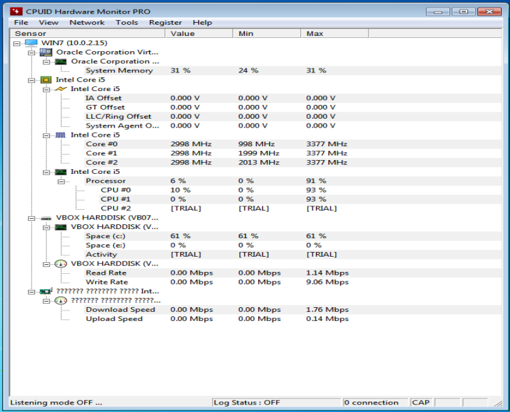

HWMonitor – программа мониторинга компонентов компьютера и системы в целом. Сюда относятся все функциональные части компьютера, к которым имеется доступ на уровне драйвера той или иной составной части. Разработчиком данного приложения является фирма CPUID.
HWMonitor поддерживает большинство всех наиболее распространённых чипов: серии ITE IT87, Winbond ICs и другие. Имеется возможность отображение температуры идёт через S.M.A.R.T жёсткого диска, температуры видеокарт на базе GPU производства ATI и NVIDIA, считывания информации с процессорных датчиков, сенсоров блоков питания abit uGuru и Gigabyte ODIN.
После установки данного приложения, в которой ничего кроме нажатия далее нам ничего не потребуется менять, появится главное окно приложения.

Рисунок 4.3.1 – главное окно приложения HWMonitor.
Здесь мы сразу же видим составные части нашего ПК, а также их показатели в текущий момент, минимальные и максимальные. Сверху можно увидеть панель, которая добавляет немного функционала данному приложению.
Во вкладке «File» нет ничего особенного, представлен типичный для этой вкладки функционал, позволяющий сохранять отчёты о работе ПК.
Во вкладке «View» настраивается отображение приложения. Можно очистить минимальные и максимальные показатели датчиков, очистить значки, отредактировать линию выделения и многое другое, также имеется небольшая возможность изменения визуального отображения программы.
Рисунок 4.3.2 – функционал вкладки «View».
Вкладка «Network» используется сугубо для отображения поведения сетевого адаптера. Кроме этого, в ней нет большего функционала.
Вкладка «Tools» позволяет перезагрузить программу, начать запись логов данного приложения, имеется возможность открытия папки пользователя от приложения, также тут имеется возможность настройки при открытии в выпадающем меню вкладки «Options».
Рисунок 4.3.3 – функционал вкладки «Tools».
После нажатия на неё появится следующее окно, в котором имеется множество настроек, позволяющих программу настроить под свои нужды.
Рисунок 4.3.4 – окно настроек приложения HWMonitor.
Две последние вкладки не несут никакого функционала. В них представлена сугубо коммерческое предложение покупки приложение, а также информация о нём.
Также имеется удобный функционал при нажатии ПКМ по тому или иному показателю, где предлагается добавить показатель на панель задач.
Рисунок 4.3.5 – результат нажатия ПКМ по показателю.
Рисунок 4.3.6 – результат добавления показателей датчиков на панель задач.
Подводя итог, приложение HWMonitor крайне напоминает Open Hardware Monitor. Программа является достаточно простой, но несёт множество полезной информации, которая будет достаточна для понимания эффективности вашего персонального компьютера, а вследствие этого и всей системы в целом.